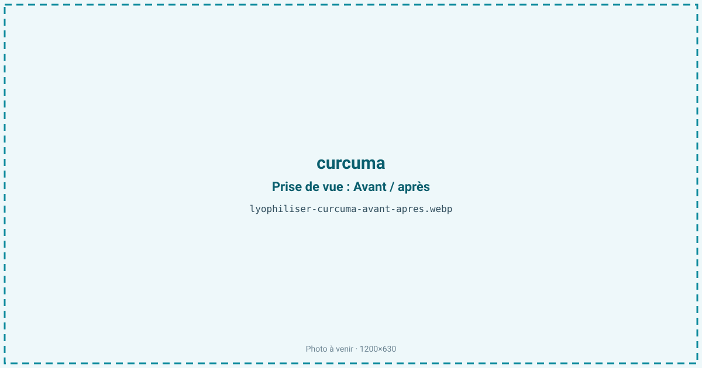
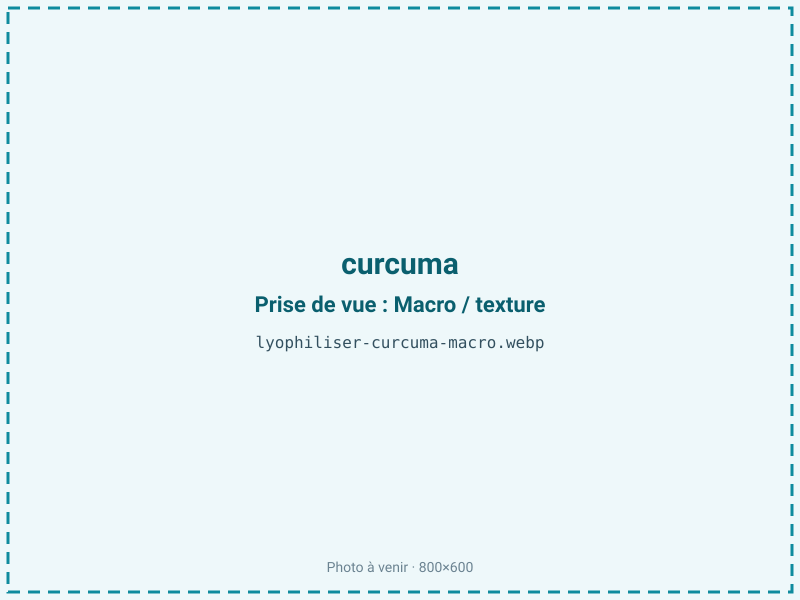
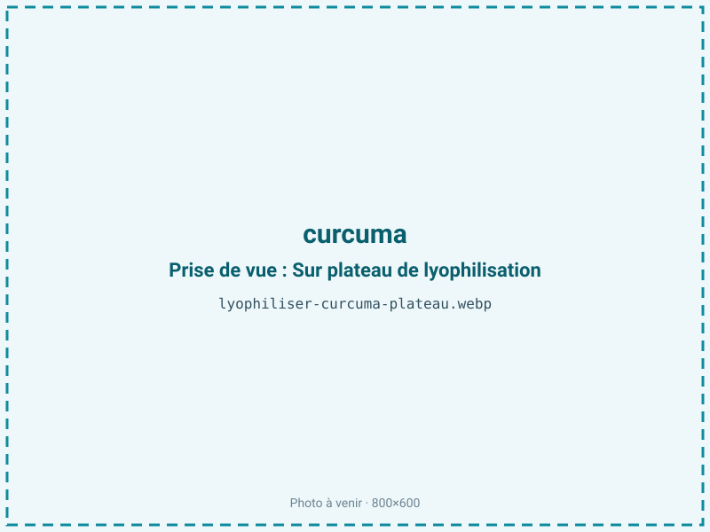
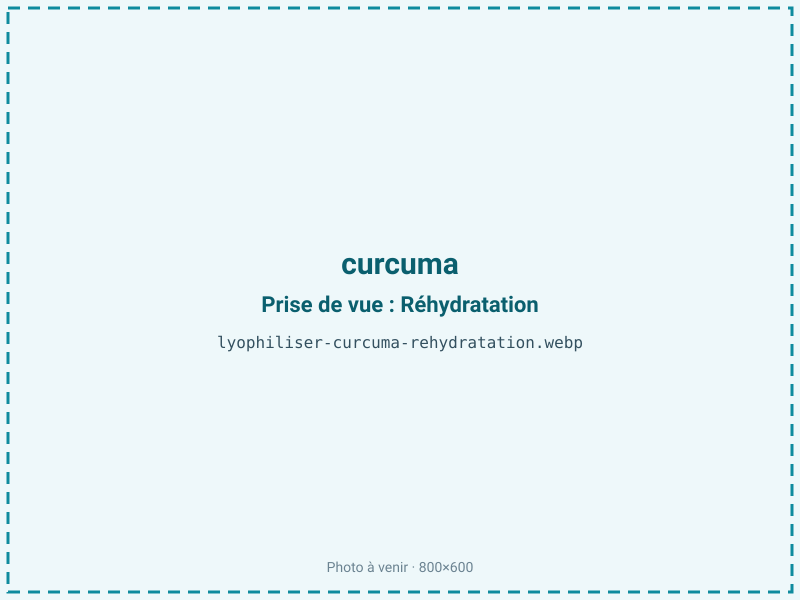

Lyophiliser du curcuma
Le curcuma frais tache, s'abîme vite et voit sa curcumine se dégrader à la lumière. Le séchage sous vide — micro-ondes pour la poudre colorante de volume, lyophilisation pour un actif préservé — stabilise le rhizome en gardant sa couleur jaune-orangé et ses curcuminoïdes. On alimente épices, colorants naturels, boissons dorées et compléments.

En bref
Comment curcuma se comporte à la lyophilisation
Le curcuma est un rhizome dense à environ 80 % d'eau, riche en amidon et coloré par des curcuminoïdes — surtout la curcumine — qui représentent 2 à 5 % de la matière sèche. Cette curcumine est un pigment liposoluble particulièrement photosensible : elle se dégrade sous la lumière, notamment les UV, plus qu'elle ne craint une chaleur modérée. L'arôme, terreux et légèrement poivré, tient à une huile essentielle (turmérone, ar-turmérone).
À la congélation, l'eau des cellules cristallise dans une matrice amidonnée dense ; comme pour le gingembre, cette densité ralentit la migration de vapeur et impose une découpe fine. À la sublimation, le pigment reste en place et la couleur se concentre à mesure que l'eau part, donnant une poudre au jaune-orangé intense. Le principal ennemi n'est donc pas le procédé lui-même, tant qu'on évite les fortes températures, mais l'exposition ultérieure à la lumière, qui décolore lentement le produit fini. Le curcuma partage cette matrice amidonnée avec le gingembre, mais sa problématique de conservation est d'abord photochimique.
Paramètres de cycle
Éplucher et trancher finement le rhizome, dans une matière amidonnée et dense où le front de sublimation progresse lentement. Le colorant étant très tenace, on dédie le matériel au curcuma pour éviter de teindre les lots suivants. Congeler à −30 °C. En primaire, une clayette modérée suffit ; inutile de pousser la température, la curcumine tolérant mal les excès thermiques et n'y gagnant rien. Le curcuma étant maigre (moins de 2 % de lipides), on vise une aw basse de 0,20 à 0,30, favorable à la conservation et sans risque de rancissement. Le critère d'arrêt combine une aw inférieure ou égale à 0,30 et un rhizome cassant qui se broie en poudre fine. Dès la sortie, conditionner à l'abri de la lumière, la photodégradation de la curcumine commençant immédiatement à l'air et à la clarté.
Pièges connus
- Colorant tenace : matériel dédié.
- Curcumine sensible à la lumière : barrière opaque.



Variantes & provenance
La teneur en curcuminoïdes varie fortement selon l'origine et la variété : certains curcumas indiens (type Alleppey) sont plus riches en curcumine et plus colorants que d'autres, plus pâles. Le rhizome mère (bulbe central) et les doigts latéraux n'ont pas la même intensité de couleur ni la même fibrosité. La fraîcheur du rhizome à la récolte pèse sur la vivacité du jaune. On traite le plus souvent le rhizome cru, mais un curcuma préalablement blanchi (pratique traditionnelle pour uniformiser la couleur) se comporte différemment au séchage. Selon la découpe — rondelles fines pour un séchage rapide, morceaux pour une poudre plus grossière —, le cycle et le rendu de la poudre changent.
Conservation & DLUO
Le facteur limitant du curcuma n'est ni le rancissement — c'est un produit maigre — ni d'abord la reprise d'humidité, mais la photodégradation de la curcumine : exposée à la lumière, la poudre pâlit progressivement et perd de sa valeur colorante et active. Une aw basse lui est favorable, sans risque d'oxydation des graisses. La barrière opaque n'est donc pas une option mais une nécessité, davantage encore que pour la plupart des épices. La poudre reste par ailleurs hygroscopique et se motte si elle reprend l'eau : un absorbeur d'humidité aide à la garder fluide. Comptez 18 à 24 mois en barrière opaque, à température ambiante, impérativement à l'abri de la lumière. Un stockage au sec et dans l'obscurité conserve à la fois l'intensité du jaune-orangé et la teneur en curcuminoïdes.
18 à 24 mois en barrière opaque.
Estimez selon votre emballage :
Face aux autres procédés de séchage
Le curcuma se prête bien au séchage à chaud, procédé traditionnel des poudres d'épice, mais des températures élevées ternissent la couleur et entament les curcuminoïdes. Le séchage à l'air est trop lent pour une matière aussi dense. Pour une poudre colorante ou active à fort volume et longue conservation, le micro-ondes sous vide offre le meilleur rapport coût/DLUO et reste la voie recommandée. La lyophilisation se justifie quand on cherche à préserver au maximum la curcumine et une couleur premium, ou un rhizome réhydratable : le froid évite tout apport thermique et fixe le pigment, la protection contre la lumière restant ensuite déterminante quel que soit le procédé.
Marchés & applications
Épice et poudre de curry, colorant jaune naturel (E100) pour l'agroalimentaire, boissons dorées et golden lattes, compléments à base de curcumine, cosmétique et soins. Les clients types sont les fabricants d'épices et de mélanges, les industriels de la couleur alimentaire, les marques de boissons fonctionnelles et de compléments, ainsi que les formulateurs cosmétiques qui recherchent une curcumine préservée et une couleur stable, sous réserve d'un conditionnement opaque.
- Épice et colorant
- Compléments (curcumine)
- Boissons dorées
Questions fréquentes — curcuma
Pourquoi un conditionnement opaque est-il indispensable ?
Parce que la curcumine est photosensible : à la lumière, la poudre pâlit et perd sa valeur colorante et active. La barrière opaque est plus critique que pour les autres épices.
La chaleur détruit-elle la curcumine ?
Une chaleur modérée l'affecte peu, mais les fortes températures du séchage classique ternissent la couleur. Le froid l'évite entièrement.
Faut-il un matériel dédié ?
Oui : le curcuma tache durablement le matériel et contaminerait la couleur des lots suivants.
Micro-ondes sous vide ou lyophilisation ?
Pour une poudre colorante de volume, le micro-ondes sous vide est le plus économique. La lyophilisation vise l'actif premium et le rhizome réhydratable.
Combien de curcuma frais pour 100 g sec ?
Environ 600 g, le ratio étant proche de 6:1 pour un rhizome à 80 % d'eau.
La poudre se conserve-t-elle longtemps ?
18 à 24 mois en barrière opaque au sec ; à l'abri de la lumière, la couleur et les curcuminoïdes restent stables.
Peut-on l'utiliser comme colorant naturel ?
Oui, c'est l'un des jaunes naturels les plus employés (E100) ; la lyophilisation en préserve l'intensité si le stockage reste sombre.
Prochaine étape : envoyez-nous 200 g
Vous avez les repères du curcuma. La suite logique : nous envoyer un échantillon et repartir avec une fiche technique sur votre produit — rendement, aw finale, coût au kilo.
Tester du curcuma — 250 à 500 €Déductible de votre premier lot.